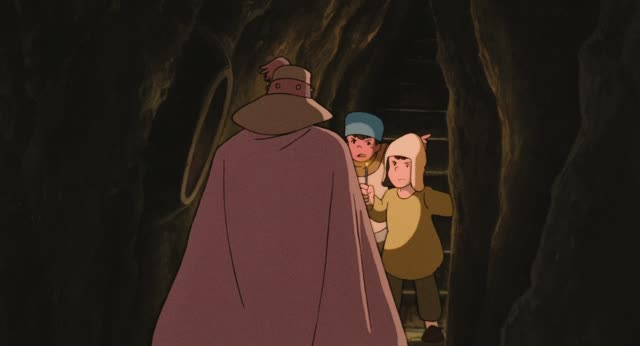
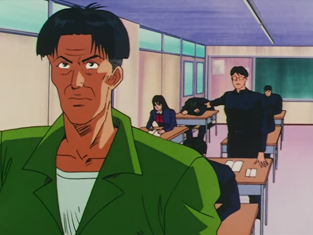
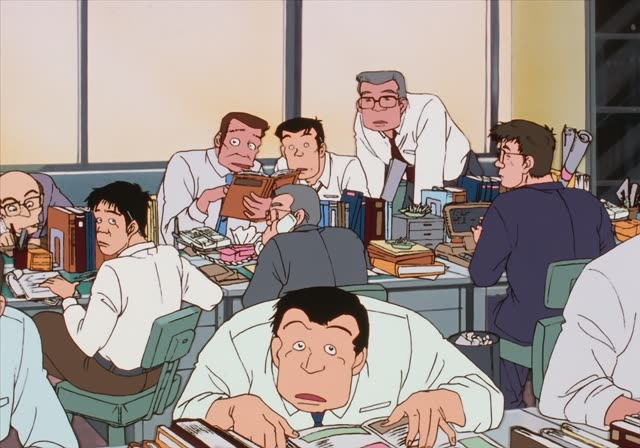
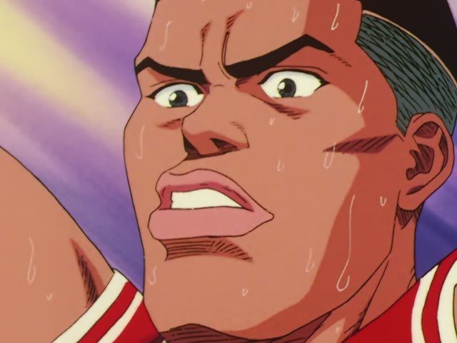

～ている (Doing now)
| Polite | ～ています |
|---|---|
| Casual | ～ている・～てる てる: spoken, everyday |
Same meaning: "is doing". Only the politeness changes.

Nausicaä of the Valley of the Wind
酸の湖でユパ様を待ってます。
"I'll be waiting for Lord Yupa at the acid lake."
ている after a verb means it's going on: not "I wait", but "I'm waiting".
It goes on the て-form: 待つ → 待って → 待っている. On this card, it answers "what will you be doing?": waiting.
ています is polite. Casual is ている, and in speech the い usually drops, like here: 待ってます / 待ってる.

Shirokuma Cafe · Episode 2
カフェやってる、白熊くんってかっこよくない？
"Isn't Shirokuma, the guy running the café, cool?"
やる → やって → やってる: ている with the い dropped. It also works for things you do these days, like running a café.
Quick Examples
Your friend calls and asks what you're up to.
今、ご飯を食べてる。
"I'm eating right now."
食べる → 食べて → 食べてる.
CasualLooking out the window.
雨が降っていますね。
"It's raining, huh."
降る → 降って.
PoliteYour mom asks where your brother is.
部屋で寝てるよ。
"He's sleeping in his room."
寝る → 寝て.
CasualSomeone asks about your job these days.
銀行で働いています。
"I work at a bank."
For things you do these days, too.
PoliteWith and without
今、本を読みます。
"I'll read a book now." About to start.
今、本を読んでいます。
"I'm reading a book now." Already in the middle of it.
Examples from Media

Slam Dunk · Episode 11
流川君、また寝てます。
"Rukawa's asleep again."
寝る → 寝ている: "is sleeping" right now.

Shirokuma Cafe · Episode 12
日夜、パンダの世話を頑張っています。
"He works hard looking after the pandas day and night."
頑張る → 頑張って. Something going on these days.

YouTube · video
音声は、今全部ね、オートで撮影しています。
"The sound is all being recorded on auto right now."
撮影する (to film) → しています.

Oishinbo · Episode 10
海原雄山がル・キャナルの記事を書いてます。
"Kaibara Yuzan is writing an article on Le Canal."
書く → 書いている: in the middle of writing it.

Shashingo
小さな家に、提灯がゆらゆらと揺れている。
"A lantern is swaying by the little house."
揺れる (to sway) → 揺れて.

Slam Dunk · Episode 77
読んでる。
"He's reading it."
読む → 読んでる: reading right now.

Source unknown No source
イラレで描いてる？
"Are you drawing in Illustrator?"
描く → 描いて → 描いてる. イラレ is short for Illustrator.
Good Morning Call · Episode 5
溶けてる。
"It's melted."
溶けてる: the state after melting.
Further Reading
A Dictionary of Basic Japanese Grammar
Entry "iru²" (be -ing) · pp. 155–157
Tae Kim's Guide to Japanese Grammar
Other uses of the te-form · Using 「～ている」 for enduring states